As
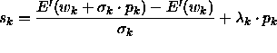
and are computed from their respective values at
step k-1, SCG has two parameters, namely the initial values
are computed from their respective values at
step k-1, SCG has two parameters, namely the initial values 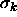
and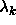
. Their values are not critical but should respect the conditions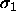
and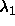
. Empirically Møller has shown that bigger values of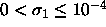
can lead to a slower convergence.The third parameter is the usual quantity
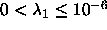
(cf. standard backpropagation).In SNNS, it is usually the responsibility of the user to determine when the learning process should stop. Unfortunately, the
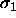
adaptation mechanism sometimes assigns too large values to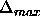
when no more progress is possible. In order to avoid floating-point exceptions, we have added a termination criterion 88]: stop when
88]: stop when 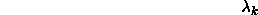
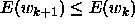
is a small number used to rectify the special case of converging to a function value of exactly zero. It is set to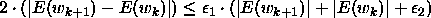
.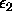
is a tolerance depending of the floating-point precision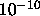
of your machine, and it should be set to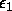
, which is usually equal to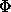
(simple precision) or to (double
precision).
(double
precision).
To summarize, there are four non-critical parameters:
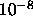
. Should satisfy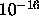
. If 0, will be set to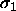
;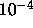
. If 0, will be set to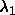
; . See standard backpropagation. Can be set to 0 if
you don't know what to do with it;
. See standard backpropagation. Can be set to 0 if
you don't know what to do with it;
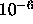
. Depends on the floating-point precision. Should be set to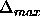
(simple precision) or to (double precision). If
0, will be set to
(double precision). If
0, will be set to  .
.
Note: SCG is a batch learning method, so shuffling the patterns has no effect.